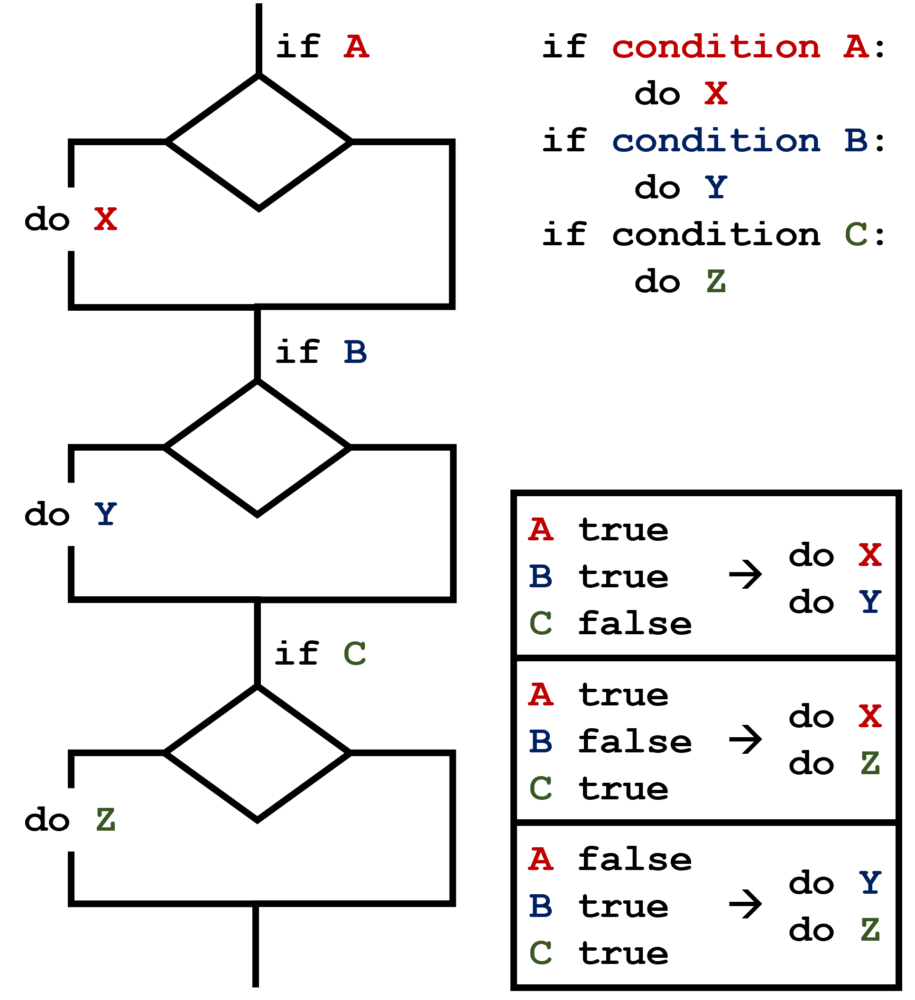

{alt=’A flowchart diagram of the if-else construct that tests if variable num is greater than 100’}
{alt=’A flowchart diagram of the if-else construct that tests if variable num is greater than 100’}Learning Objectives {.objectives}
- Write conditional statements including
if,elif, andelsebranches.- Correctly evaluate expressions containing
andandor.Questions {.questions}
- How can my programs do different things based on data values?
In our last lesson, we discovered something suspicious was going on in our inflammation data by drawing some plots. How can we use Python to automatically recognize the different features we saw, and take a different action for each? In this lesson, we’ll learn how to write code that runs only when certain conditions are true.
We can ask Python to take different actions, depending on a condition, with an if statement:
num = 37
if num > 100:
print('greater')
else:
print('not greater')
print('done')
not greater
done
The second line of this code uses the keyword if to tell Python that we want to make a choice.
If the test that follows the if statement is true,
the body of the if
(i.e., the set of lines indented underneath it) is executed, and “greater” is printed.
If the test is false,
the body of the else is executed instead, and “not greater” is printed.
Only one or the other is ever executed before continuing on with program execution to print “done”:
{alt=’A flowchart diagram of the if-else construct that tests if variable num is greater than 100’}
Conditional statements don’t have to include an else.
If there isn’t one,
Python simply does nothing if the test is false:
num = 53
print('before conditional...')
if num > 100:
print(num, 'is greater than 100')
print('...after conditional')
before conditional...
...after conditional
We can also chain several tests together using elif,
which is short for “else if”.
The following Python code uses elif to print the sign of a number.
num = -3
if num > 0:
print(num, 'is positive')
elif num == 0:
print(num, 'is zero')
else:
print(num, 'is negative')
-3 is negative
Note that to test for equality we use a double equals sign ==
rather than a single equals sign = which is used to assign values.
Comparing in Python {.callout}
Along with the
>and==operators we have already used for comparing values in our conditionals, there are a few more options to know about:
>: greater than<: less than==: equal to!=: does not equal>=: greater than or equal to<=: less than or equal to
We can also combine tests using and and or.
and is only true if both parts are true:
if (1 > 0) and (-1 >= 0):
print('both parts are true')
else:
print('at least one part is false')
at least one part is false
while or is true if at least one part is true:
if (1 < 0) or (1 >= 0):
print('at least one test is true')
at least one test is true
TrueandFalse{.callout}
TrueandFalseare special words in Python calledbooleans, which represent truth values. A statement such as1 < 0returns the valueFalse, while-1 < 0returns the valueTrue.
Now that we’ve seen how conditionals work,
we can use them to check for the suspicious features we saw in our inflammation data.
We are about to use functions provided by the numpy module again.
Therefore, if you’re working in a new Python session, make sure to load the
module and data with:
import numpy
data = numpy.loadtxt(fname='inflammation-01.csv', delimiter=',')
From the first couple of plots, we saw that maximum daily inflammation exhibits a strange behavior and raises one unit a day. Wouldn’t it be a good idea to detect such behavior and report it as suspicious? Let’s do that! However, instead of checking every single day of the study, let’s merely check if maximum inflammation in the beginning (day 0) and in the middle (day 20) of the study are equal to the corresponding day numbers.
max_inflammation_0 = numpy.amax(data, axis=0)[0]
max_inflammation_20 = numpy.amax(data, axis=0)[20]
if max_inflammation_0 == 0 and max_inflammation_20 == 20:
print('Suspicious looking maxima!')
We also saw a different problem in the third dataset;
the minima per day were all zero (looks like a healthy person snuck into our study).
We can also check for this with an elif condition:
elif numpy.sum(numpy.amin(data, axis=0)) == 0:
print('Minima add up to zero!')
And if neither of these conditions are true, we can use else to give the all-clear:
else:
print('Seems OK!')
Let’s test that out:
data = numpy.loadtxt(fname='inflammation-01.csv', delimiter=',')
max_inflammation_0 = numpy.amax(data, axis=0)[0]
max_inflammation_20 = numpy.amax(data, axis=0)[20]
if max_inflammation_0 == 0 and max_inflammation_20 == 20:
print('Suspicious looking maxima!')
elif numpy.sum(numpy.amin(data, axis=0)) == 0:
print('Minima add up to zero!')
else:
print('Seems OK!')
Suspicious looking maxima!
data = numpy.loadtxt(fname='inflammation-03.csv', delimiter=',')
max_inflammation_0 = numpy.amax(data, axis=0)[0]
max_inflammation_20 = numpy.amax(data, axis=0)[20]
if max_inflammation_0 == 0 and max_inflammation_20 == 20:
print('Suspicious looking maxima!')
elif numpy.sum(numpy.amin(data, axis=0)) == 0:
print('Minima add up to zero!')
else:
print('Seems OK!')
Minima add up to zero!
In this way,
we have asked Python to do something different depending on the condition of our data.
Here we printed messages in all cases,
but we could also imagine not using the else catch-all
so that messages are only printed when something is wrong,
freeing us from having to manually examine every plot for features we’ve seen before.
How Many Paths? {.challenge}
Consider this code:
if 4 > 5: print('A') elif 4 == 5: print('B') elif 4 < 5: print('C')Which of the following would be printed if you were to run this code? Why did you pick this answer?
- A
- B
- C
- B and C
Solution
C gets printed because the first two conditions,
4 > 5and4 == 5, are not true, but4 < 5is true. In this case only one of these conditions can be true for at a time, but in other scenarios multipleelifconditions could be met. In these scenarios only the action associated with the first trueelifcondition will occur, starting from the top of the conditional section.{alt=’A flowchart diagram of a conditional section with multiple elif conditions and some possible outcomes.’} This contrasts with the case of multiple
ifstatements, where every action can occur as long as their condition is met. {alt=’A flowchart diagram of a conditional section with multiple if statements and some possible outcomes.’}
What Is Truth? {.challenge}
TrueandFalsebooleans are not the only values in Python that are true and false. In fact, any value can be used in aniforelif. After reading and running the code below, explain what the rule is for which values are considered true and which are considered false.if '': print('empty string is true') if 'word': print('word is true') if []: print('empty list is true') if [1, 2, 3]: print('non-empty list is true') if 0: print('zero is true') if 1: print('one is true')
That’s Not Not What I Meant {.challenge}
Sometimes it is useful to check whether some condition is not true. The Boolean operator
notcan do this explicitly. After reading and running the code below, write someifstatements that usenotto test the rule that you formulated in the previous challenge.if not '': print('empty string is not true') if not 'word': print('word is not true') if not not True: print('not not True is true')
Close Enough {.challenge}
Write some conditions that print
Trueif the variableais within 10% of the variablebandFalseotherwise. Compare your implementation with your partner’s: do you get the same answer for all possible pairs of numbers?Hint
There is a built-in function
absthat returns the absolute value of a number:print(abs(-12))12Solution 1
a = 5 b = 5.1 if abs(a - b) <= 0.1 * abs(b): print('True') else: print('False')Solution 2
print(abs(a - b) <= 0.1 * abs(b))This works because the Booleans
TrueandFalsehave string representations which can be printed.
In-Place Operators {.challenge}
Python (and most other languages in the C family) provides in-place operators that work like this:
x = 1 # original value x += 1 # add one to x, assigning result back to x x *= 3 # multiply x by 3 print(x)6Write some code that sums the positive and negative numbers in a list separately, using in-place operators. Do you think the result is more or less readable than writing the same without in-place operators?
Solution
positive_sum = 0 negative_sum = 0 test_list = [3, 4, 6, 1, -1, -5, 0, 7, -8] for num in test_list: if num > 0: positive_sum += num elif num == 0: pass else: negative_sum += num print(positive_sum, negative_sum)Here
passmeans “don’t do anything”. In this particular case, it’s not actually needed, since ifnum == 0neither sum needs to change, but it illustrates the use ofelifandpass.
Sorting a List Into Buckets {.challenge}
In our
datafolder, large data sets are stored in files whose names start with “inflammation-“ and small data sets – in files whose names start with “small-“. We also have some other files that we do not care about at this point. We’d like to break all these files into three lists calledlarge_files,small_files, andother_files, respectively.Add code to the template below to do this. Note that the string method
startswithreturnsTrueif and only if the string it is called on starts with the string passed as an argument, that is:'String'.startswith('Str')TrueBut
'String'.startswith('str')FalseUse the following Python code as your starting point:
filenames = ['inflammation-01.csv', 'myscript.py', 'inflammation-02.csv', 'small-01.csv', 'small-02.csv'] large_files = [] small_files = [] other_files = []Your solution should:
- loop over the names of the files
- figure out which group each filename belongs in
- append the filename to that list
In the end the three lists should be:
large_files = ['inflammation-01.csv', 'inflammation-02.csv'] small_files = ['small-01.csv', 'small-02.csv'] other_files = ['myscript.py']Solution
for filename in filenames: if filename.startswith('inflammation-'): large_files.append(filename) elif filename.startswith('small-'): small_files.append(filename) else: other_files.append(filename) print('large_files:', large_files) print('small_files:', small_files) print('other_files:', other_files)
Counting Vowels {.challenge}
- Write a loop that counts the number of vowels in a character string.
- Test it on a few individual words and full sentences.
- Once you are done, compare your solution to your neighbor’s. Did you make the same decisions about how to handle the letter ‘y’ (which some people think is a vowel, and some do not)?
Solution
vowels = 'aeiouAEIOU' sentence = 'Mary had a little lamb.' count = 0 for char in sentence: if char in vowels: count += 1 print('The number of vowels in this string is ' + str(count))
Keypoints {.objectives}
- Use
if conditionto start a conditional statement,elif conditionto provide additional tests, andelseto provide a default.- The bodies of the branches of conditional statements must be indented.
- Use
==to test for equality.X and Yis only true if bothXandYare true.X or Yis true if eitherXorY, or both, are true.- Zero, the empty string, and the empty list are considered false; all other numbers, strings, and lists are considered true.
TrueandFalserepresent truth values.